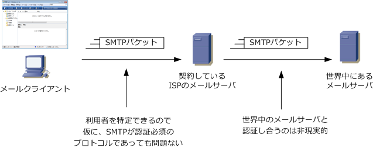
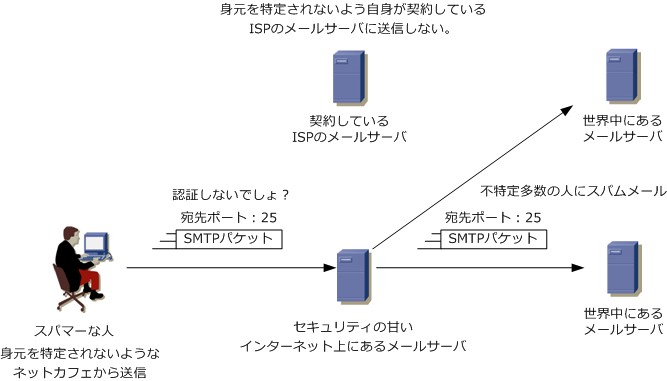
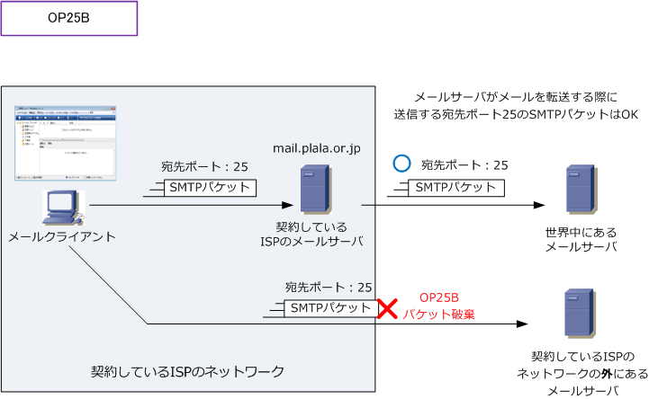
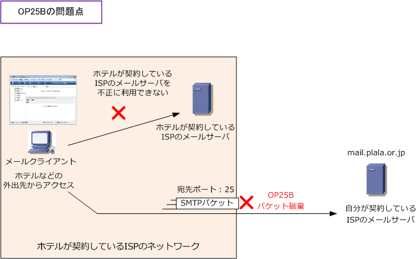
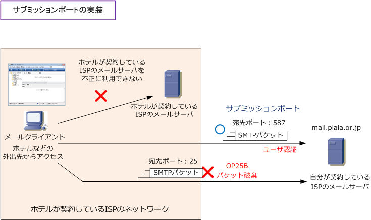
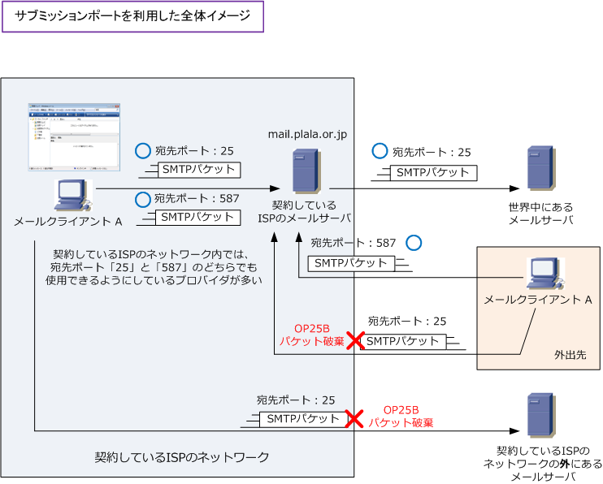
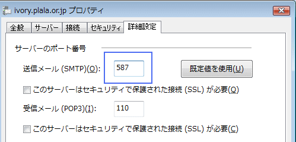
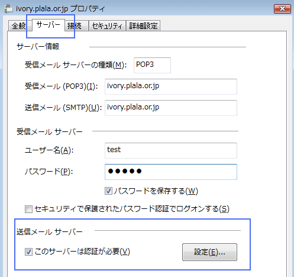
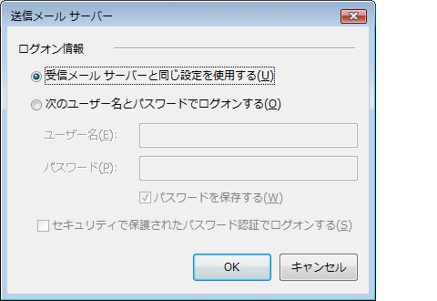

SMTP Submission Port
SMTP-AUTHとSTARTTLS
SMTP-AUTH（SMTP認証）は、メールクライアントが送信サーバへメールを投稿する際に利用者を認証する仕組みです。サブミッションポート（587/TCP）で用いられ、STARTTLSは平文で開始したSMTP接続をTLSに切り替える拡張コマンドです。STARTTLSは通信の暗号化、SMTP-AUTHは利用者の認証を担います。
SMTPプロトコル - 認証する場合の問題点
前回に解説したSMTPとPOP3の仕組みの通り、POP3の場合はメール受信の際にメールサーバにユーザ名と パスワードの情報を送信して認証が行われますが、SMTPの場合は認証が行われていません。SMTPが使用 されるのがメーラからメールサーバに送信するためだけなら、SMTPでも認証必須で良いかもしれませんが メールサーバ間のメール転送にもSMTPが使用されるため、SMTPがPOP3と同様に認証を必須とした場合、 任意のドメインのメールサーバからメールを転送できなくなるのでSMTPは認証を必須としていないのです。

SMTPプロトコル - 認証しない場合の問題点
SMTPが認証しないプロトコルということは、例えばNTTぷららと契約していてもぷららのメールサーバを 利用せずに、インターネット上に存在するセキュリティ設定の甘いメールサーバを利用して送信することが 可能であることを意味します。スパマー（不特定多数の人に一方的な広告メールを送信する人）は、自身の 身元が特定されないように、このような手法を利用し（その他の手法もあわせて）スパム行為をしています。

OP25B ( Outbound Port 25 Blocking )
OP25Bとは、自身が契約しているISPのメールサーバにメールを送信するのではなく、他のメールサーバに 出て行こうとするメールを遮断するものです。スパムメールの多くは、自身の契約したISPのメールサーバ を介さずに、インターネット上のセキュリティの甘いメールサーバ（あるいは悪意のあるメールサーバ）に 直接送信されていたことから、ISP各社がOP25Bを採用することで、近年スパムメールは減ってきています。

サブミッションポート
OP25Bはスパムメール対策として、かなり効果のある対策であったのですが、正しく利用しているユーザに 弊害のある対策でもありました。例えば、ホテルなどの外出先でインターネット接続する場合、ホテルが契約 しているISPのメールサーバを利用できる訳ではないですし、また自身が契約しているISPのメールサーバに アクセスしようとしても、ホテルが契約しているISP側でOP25Bが実施されているのでメールが届きません。

この弊害を解決するためにサブミッションポートが利用されるようになりました。サブミッションポートは クライアントPCの「メーラからメールサーバにメールを送信する際に使用する宛先ポート（587）」です。 今までと同様にプロトコルにはSMTPを使用しますが、宛先ポートが「25」ではなく「587」を使用します。

これにより、宛先ポート「587」のSMTPパケットは遮断されている訳ではないので、外出先から自身が契約 しているISPのメールサーバにメールを送信できます。ただしこのサブミッションポートでも認証がない場合 結局は、スパマーも宛先ポートを「587」に変更してメールを送信すればいいだけとなってしまうので、この サブミッションポート宛てにアクセスしてきた通信にはSMTP認証が行われます。SMTP認証はメールを送信 する際にユーザ認証を行い、認証された場合にメールを送信する技術です。サブミッションポートはあくまで メーラーからメールサーバにメールを送る際に使用するポートなので、メールサーバからメールサーバへの メールの送信は引き続き、認証を行わない宛先ポート番号25のSMTPを使用するので全て丸くおさまります。

自宅にいる時はSMTPの宛先ポートを25、外出している時にはSMTPの宛先ポートを587にその都度変更 するのは手間なので、あらかじめ宛先ポート587に設定しておくのが一般的です。自宅でもサブミッション ポートでもアクセスできるので「25・587」のどちらを指定しても問題ありません。プロバイダにもよる。
サブミッションポートの設定
メーラでサブミッションポートを設定するために、SMTPのポート番号を「25」から「587」へ変更します。

次に、送信メールサーバ（SMTPサーバ）においてSMTP認証を行うために、「このサーバは認証が必要」 というチェックボックスにチェックをいれます。続いて右側にある「設定（E)」というボタンをクリック。

SMTP認証に使用するユーザ名とパスワードは、POP3で使用するものと同じにするプロバイダが多いです。 その場合、「受信メールサーバと同じ設定を使用する」を選択して「ＯＫ」。別途、SMTP認証のための パスワードが付与されている場合「次のユーザ名とパスワードでログオンする」を選択し情報を入力します。
